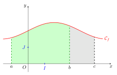
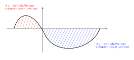
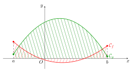
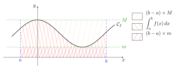
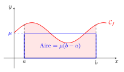

Intégrales
1 Intégrale d’une fonction continue positive
1.1 Notation - définition de l’intégrale
Dans un repère orthogonal \left(O,\overrightarrow{i},\overrightarrow{j}\right), on note O(0;0), I(1;0), K(1;1) et J(0;1).
Alors l’aire de OIKJ est appelée unité d’aire (notation u.a.).
Si OI=3 cm et OJ=2 cm alors 1 u.a. = 6 cm^2.
Soient f une fonction continue et positive sur un intervalle I et (a,b) \in I^2 avec a<b. L’aire (algébrique) du domaine délimité par les droites d’équations x=a, x=b, l’axe des abscisses et la courbe C_f, exprimée en unités d’aire, est notée \int_a^b f(x)dx, on prononce « intégrale de a à b de f(x)dx ».
Cette aire est parfois notée \int f ou \int_{[a,b]} f s’il n’y a pas ambiguïté.
Les réels a et b sont appelés les bornes de l’intégrale.
Le nombre \displaystyle \int_a^b f(x)dx ne dépend que de a, b et f. On dit que x est une variable muette. On peut également écrire ce nombre \displaystyle \int_a^b f(t)dt, \int_a^b f(u)du ou encore \displaystyle \int_a^b f.
Si f est une fonction négative sur [a;b], alors l’aire du domaine \mathcal{D}, en u.a, est : \text{aire}(\mathcal{D}) = \int_a^b -f(x) dx
1.2 Premières propriétés
Soient f une fonction continue positive sur I, (a,b)\in I^2 avec a\leqslant b. On a : \int_a^b f(x)dx \geqslant 0 \qquad \text{et si } a=b : \quad \int_a^a f(x)dx= 0
\displaystyle \int_a^b f(x)dx désigne une aire, c’est donc un nombre positif.
Si a=b, alors le domaine est réduit à un segment. Son aire est donc nulle.
Additivité des aires
Soient f une fonction continue positive sur I, (a,b,c)\in I^3 avec a<b<c. On a : \int_a^b f(x)dx + \int_b^c f(x)dx = \int_a^c f(x)dx
\;

Invariance par symétrie et par translation
Soient f une fonction continue positive sur I, C sa courbe représentative dans un repère orthogonal \left(O,\overrightarrow{i},\overrightarrow{j}\right), et des réels positifs a, b et T tels que -a, a, b, a+T et b+T appartiennent à I.
Si C est symétrique par rapport à l’axe des ordonnées alors \displaystyle \int_{-a}^0 f(x)dx=\int_0^a f(x)dx.
Si C est invariante par translation de vecteur T\overrightarrow{i} alors \displaystyle \int_a^b f(x)dx=\int_{a+T}^{b+T} f(x)dx.
2 Théorème fondamental : existence de primitives
Soit f une fonction continue et positive sur un intervalle [a,b] de \mathbb{R}. La fonction \displaystyle F : x \mapsto \int_a^x f(t)dt est dérivable sur [a,b] : \forall x \in [a,b], \quad F'(x) = f(x) \quad \text{et} \quad F(a) = 0 F est donc l’unique primitive de f qui s’annule en a.
Dans le cas où f est continue, positive et croissante.
Soient f une fonction continue, positive et croissante sur [a,b] et la fonction F définie sur [a,b] par F(x) = \int_a^x f(t)dt.
Soit x_0 \in [a,b], montrons que F est dérivable en x_0 et que F'(x_0) = f(x_0). Pour cela, il faut revenir au taux de variation de F et montrer qu’il tend vers f(x_0), donc étudions la différence entre ce taux et f(x_0) ; on a alors pour x \neq x_0 : \begin{aligned} \frac{F(x)-F(x_0)}{x-x_0}-f(x_0) & = \frac{1}{x-x_0}\left(\int_{a}^{x}f(t)dt-\int_{a}^{x_0}f(t)dt\right) - \frac{1}{x-x_0}f(x_0)(x-x_0) \\ & = \frac{1}{x-x_0}\left(\int_{a}^{x}f(t)dt+\int_{x_0}^{a}f(t)dt\right) - \frac{1}{x-x_0}\int_{x_0}^{x}f(x_0)dt \\ & = \frac{1}{x-x_0}\left(\int_{x_0}^{x}f(t)dt- \int_{x_0}^{x}f(x_0)dt \right) \qquad \text{ (en utilisant Chasles et en factorisant)}\\ & = \frac{1}{x-x_0}\int_{x_0}^{x}\left[f(t)-f(x_0)\right]dt \end{aligned}
Premier cas : x_0<x.
Alors pour t \in [x_0; x], par croissance de f, f(x_0)\leqslant f(t)\leqslant f(x), donc 0 \leqslant f(t)-f(x_0) \leqslant f(x)-f(x_0), donc par croissance de l’intégrale et en multipliant par \frac{1}{x-x_0}>0 on obtient : 0 \leqslant \frac{1}{x-x_0}\int_{x_0}^{x}\left[f(t)-f(x_0)\right]dt \leqslant \frac{1}{x-x_0}\int_{x_0}^{x}\left[f(x)-f(x_0)\right]dt, c’est-à-dire 0 \leqslant \frac{1}{x-x_0}\int_{x_0}^{x}\left[f(t)-f(x_0)\right]dt \leqslant f(x)-f(x_0) Par continuité de f en x_0, \lim_{x\to x_0}f(x) = f(x_0) donc on applique le théorème des gendarmes d’où \lim_{\substack{x\to x_0\\x>x_0}} \frac{1}{x-x_0}\int_{x_0}^{x}\left[f(t)-f(x_0)\right]dt = 0, soit \lim_{\substack{x\to x_0\\x>x_0}} \frac{F(x)-F(x_0)}{x-x_0}=f(x_0).
Deuxième cas : x_0>x.
Alors pour t \in [x; x_0], par croissance de f, f(x)\leqslant f(t)\leqslant f(x_0), donc f(x)-f(x_0) \leqslant f(t)-f(x_0) \leqslant 0, donc par croissance de l’intégrale (mais attention ici x<x_0 !), 0 \leqslant \int_{x_0}^{x}\left[f(t)-f(x_0)\right]dt \leqslant \int_{x_0}^{x}\left[f(x)-f(x_0)\right]dt, puis en multipliant par \frac{1}{x-x_0}<0 on obtient : \frac{1}{x-x_0}\int_{x_0}^{x}\left[f(x)-f(x_0)\right]dt \leqslant \frac{1}{x-x_0}\int_{x_0}^{x}\left[f(t)-f(x_0)\right]dt \leqslant 0, c’est-à-dire (on finit de la même façon) f(x)-f(x_0) \leqslant \frac{1}{x-x_0}\int_{x_0}^{x}\left[f(t)-f(x_0)\right]dt \leqslant 0 Par continuité de f en x_0, \lim_{x\to x_0}f(x) = f(x_0) donc on applique le théorème des gendarmes d’où \lim_{\substack{x\to x_0\\x<x_0}} \frac{1}{x-x_0}\int_{x_0}^{x}\left[f(t)-f(x_0)\right]dt = 0, soit \lim_{\substack{x\to x_0\\x<x_0}} \frac{F(x)-F(x_0)}{x-x_0}=f(x_0).
Toute fonction continue sur un intervalle I admet des primitives sur I.
Dans le cas où I=[a,b], en admettant qu’alors f admet un minimum sur I.
D’après le théorème (fondamental) précédent, toute fonction continue positive sur un intervalle admet des primitives sur cet intervalle.
Si f est une fonction continue sur un segment [a,b], elle admet un minimum m sur ce segment. Alors la fonction qui à x associe f(x)-m est continue et positive sur [a,b], cette fonction admet une primitive G. Alors la fonction F définie sur [a,b] par F(x) = G(x)+mx a pour dérivée x \mapsto G'(x)+m=f(x)-m+m c’est-à-dire f. F est donc une primitive de f.
Ce théorème prouve qu’il existe des primitives pour les fonctions continues, mais il ne donne pas de formule explicite.
Si f est une fonction continue et positive sur I et (a,b) \in I^2 alors : \int_a^b f(t) dt = F(b)-F(a) où F est une primitive quelconque de f sur I.
On note \displaystyle \int_a^b f(t) dt = \big[ F(x) \big]_a^b = F(b)-F(a)
Soit G la fonction définie sur [a;b] par G(x)=\displaystyle \int_a^x f(t) dt. G est une primitive de f sur [a;b] donc il existe k\in \mathbb{R} tel que G(x)=F(x)+k. De plus G(a)=0 donc 0=F(a)+k donc k=-F(a). Donc G(x)=F(x)-F(a) donc \displaystyle \int_a^b f(t) dt=G(b)=F(b)-F(a)
Soit f la fonction définie sur \mathbb{R} par f(x)=\cos(x). Calculer la valeur de l’aire sous la courbe de f sur l’intervalle \left[0,\dfrac{\pi}{2}\right].
f est continue et positive sur \left[0,\dfrac{\pi}{2}\right]. La fonction F définie sur \left[0,\dfrac{\pi}{2}\right] par F(x)=\sin(x) est une primitive de f. On a donc: A=\displaystyle \int_0^\frac{\pi}{2} \cos(x) dx= [\sin(x)]^\frac{\pi}{2}_0=\sin\left(\dfrac{\pi}{2}\right)-\sin(0)=1
3 Intégrale d’une fonction de signe quelconque
3.1 Définition
Pour toute fonction f continue sur un intervalle I, pour tous a et b de I :
\displaystyle \int_a^b f(t) dt = F(b)-F(a).
Cette définition est cohérente avec les résultats précédents et ne dépend pas de la primitive F choisie (deux primitives diffèrent d’une constante).
3.2 Propriétés de l’intégrale
Dans tout ce paragraphe, (a,b,c)\in I^3, \alpha est un réel et f, g sont des fonctions continues sur I.
Inversion des bornes
\displaystyle \int_a^b f(x)dx = -\int_b^a f(x)dx
Relation de Chasles
\displaystyle \int_a^b f(x)dx + \int_b^c f(x)dx =\int_a^c f(x)dx
Linéarité de l’intégrale
\displaystyle \int_a^b \big( f(x) + g(x)\big)dx = \int_a^b f(x)dx + \int_a^b g(x)dx
\displaystyle \int_a^b \alpha f(x)dx = \alpha \int_a^b f(x)dx
Positivité de l’intégrale
Si a \leqslant b et si f \leqslant 0 sur [a,b] alors \displaystyle \int_a^b f(x)dx \leqslant 0.
La réciproque est fausse : il est possible d’avoir une intégrale négative avec une fonction dont le signe change. Il faut penser à l’aire algébrique (aire comptée positivement pour des domaines au-dessus de l’axe des abscisses et négativement sinon) :

Stricte positivité
Si f \geqslant 0 sur [a,b] et si \displaystyle \int_a^b f(x)dx = 0 avec a \neq b alors f = 0 sur [a,b].
Croissance de l’intégrale
Si a \leqslant b et si f \leqslant g sur [a,b] alors \displaystyle \int_a^b f(x)dx \leqslant \int_a^b g(x)dx.
La réciproque est fausse : il faut encore une fois penser au côté géométrique: ici on a bien \int_a^b g(x)dx \geqslant \int_a^b f(x) dx mais pas g \geqslant f. En particulier f(a)> g(a)

g(a) et f(b) > g(b)">4 Intégration par parties
Soient f et g de classe C^1 sur [a,b] : \int_a^b f(t)g'(t)dt = \left[ f(t)g(t) \right]_a^b - \int_a^b f'(t)g(t)dt
Avec les mêmes notations:
f et g sont dérivables sur [a;b] donc par produit fg est dérivable sur [a;b]. Or (fg)'=f'g+fg'. Ainsi fg est une primitive de f'g+fg' sur [a;b]. Donc: [f(x)g(x)]^b_a=\int_a^b (f'(x)g(x)+f(x)g'(x))dx = \int_a^b f'(x)g(x) dx + \int_a^b f(x)g'(x) dx d’où la formule d’intégration par parties: \int_a^b f(t)g'(t)dt = \left[ f(t)g(t )\right]_a^b - \int_a^b f'(t)g(t)dt
Cette formule s’applique lorsqu’on cherche à calculer l’intégrale d’un produit de deux fonctions à condition que \int_a^b f'(t)g(t)dt soit plus facile à calculer que \int_a^b f(t)g'(t)dt.
C’est le cas en particulier pour le produit:
d’une fonction polynôme et d’une fonction sinus ou cosinus (avec f égale à la fonction polynôme)
d’une fonction polynôme et d’une fonction logarithme (avec f égale à la fonction logarithme)
d’une fonction exponentielle et d’une fonction sinus ou cosinus.
Calculer I=\displaystyle \int_0^\frac{\pi}{2} x \cos(x) dx.
Calculer J=\displaystyle \int_0^\frac{\pi}{2} \mathrm{e}^{-2x} \cos(x) dx
Calculer I=\displaystyle \int_0^\frac{\pi}{2} x \cos(x) dx.
On pose f(x)=x alors f'(x)=1 et
g'(x)=\cos(x) alors g(x)=\sin(x)
Donc I=\displaystyle \int_0^\frac{\pi}{2} f(x)g'(x)dx =\left[ f(x)g(x)\right]_0^\frac{\pi}{2} - \displaystyle \int_0^\frac{\pi}{2} f'(x)g(x)dx = [x \sin(x)]_0^\frac{\pi}{2}-\displaystyle \int_0^\frac{\pi}{2} \sin(x)dx
Donc I=[x \sin(x)+\cos(x)]_0^\frac{\pi}{2}=\dfrac{\pi}{2}-1Remarque: le calcul de I permet de trouver les primitives de la fonction f:x \mapsto x \cos(x): les primitives de f sur \mathbb{R} sont F:x \mapsto x \sin(x)+\cos(x) +C, avec C \in \mathbb{R}
Calculer J=\displaystyle \int_0^\frac{\pi}{2} \mathrm{e}^{-2x} \cos(x) dx
On pose, par exemple, en choisissant f égale à la fonction exponentielle:
f(x)=\mathrm{e}^{-2x} alors f'(x)=-2\mathrm{e}^{-2x} et
g'(x)=\cos(x) alors g(x)=\sin(x)
Alors J=\displaystyle \int_0^\frac{\pi}{2} f(x)g'(x)dx =\left[ f(x)g(x)\right]_0^\frac{\pi}{2} - \displaystyle \int_0^\frac{\pi}{2} f'(x)g(x)dx =[\mathrm{e}^{-2x} \sin(x)]_0^\frac{\pi}{2} +2 \displaystyle \int_0^\frac{\pi}{2} \mathrm{e}^{-2x}\sin(x)dx
On applique à nouveau une intégration par parties pour \displaystyle \int_0^\frac{\pi}{2} \mathrm{e}^{-2x}\sin(x)dx en posant à nouveau:
f(x)=\mathrm{e}^{-2x} alors f'(x)=-2\mathrm{e}^{-2x} et
g'(x)=\sin(x) alors g(x)=-\cos(x)
Ainsi \displaystyle \int_0^\frac{\pi}{2} \mathrm{e}^{-2x}\sin(x)dx= [-\mathrm{e}^{-2x}\cos(x)]_0^\frac{\pi}{2} -2 \displaystyle \int_0^\frac{\pi}{2} \mathrm{e}^{-2x}\cos(x)dx
Finalement, J=[\mathrm{e}^{-2x} \sin(x)]_0^\frac{\pi}{2} +2 \displaystyle \int_0^\frac{\pi}{2} \mathrm{e}^{-2x}\sin(x)dx= [\mathrm{e}^{-2x} \sin(x)]_0^\frac{\pi}{2} + 2 [-\mathrm{e}^{-2x}\cos(x)]_0^\frac{\pi}{2} -4 \displaystyle \int_0^\frac{\pi}{2} \mathrm{e}^{-2x}\cos(x)dx
d’où J=[\mathrm{e}^{-2x}\sin(x)-2\mathrm{e}^{-2x}\cos(x)]_0^\frac{\pi}{2}-4J
Ainsi 5J=[\mathrm{e}^{-2x}(\sin(x)-2\cos(x))]_0^\frac{\pi}{2} donc J=\dfrac{1}{5} (\mathrm{e}^{-\pi}+2)
5 Applications
5.1 Calculs d’aire
Soit f une fonction continue et négative sur un intervalle I et (a,b) \in I^2 avec a<b . L’aire du domaine délimité par les droites d’équations x=a, x=b, l’axe des abscisses et la courbe \mathcal{C}_f, exprimée en unités d’aire, est égale à \int_a^b -f(x)dx.
Soient f et g des fonctions continues sur un intervalle [a,b] telles que f \leqslant g sur [a,b] et \mathcal{C}_f, \mathcal{C}_g leurs courbes représentatives. L’aire du domaine délimité par les droites d’équations x=a, x=b, les courbes \mathcal{C}_f et \mathcal{C}_g, exprimée en unités d’aire, est égale à \int_a^b \big(g(x)-f(x)\big)dx.
5.2 Moyennes
Soit f continue sur I et (a,b)\in I^2, a \neq b.
5.2.1 Inégalité de la moyenne
Si \forall x \in [a,b] \quad m \leqslant f(x) \leqslant M, alors m(b-a) \leqslant \int_a^b f(x)dx \leqslant M(b-a).

La proposition précédente peut aussi s’écrire: m \leqslant \frac{1}{b-a} \int_a^b f(x)dx \leqslant M.
5.2.2 Valeur moyenne
Le nombre réel \frac{1}{b-a}\int_a^b f(x)dx est appelé valeur moyenne de f sur [a,b].
En notant \mu la valeur moyenne de f sur [a,b] : si f est une fonction positive, on a \int_a^b f(x) dx = \mu (b-a). L’aire sous la courbe de f est donc égale à l’aire du rectangle de largeur b-a et de hauteur \mu, c’est-à-dire l’aire sous la courbe de la fonction constante de valeur \mu.
